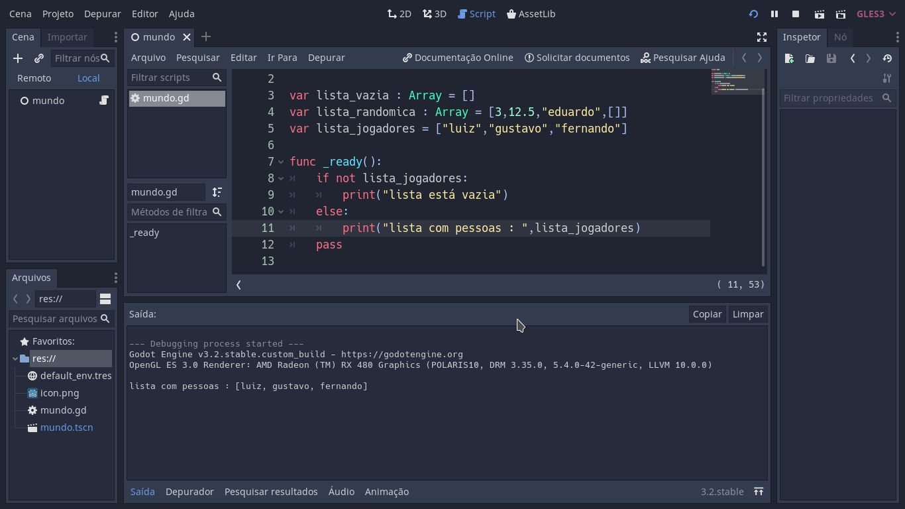
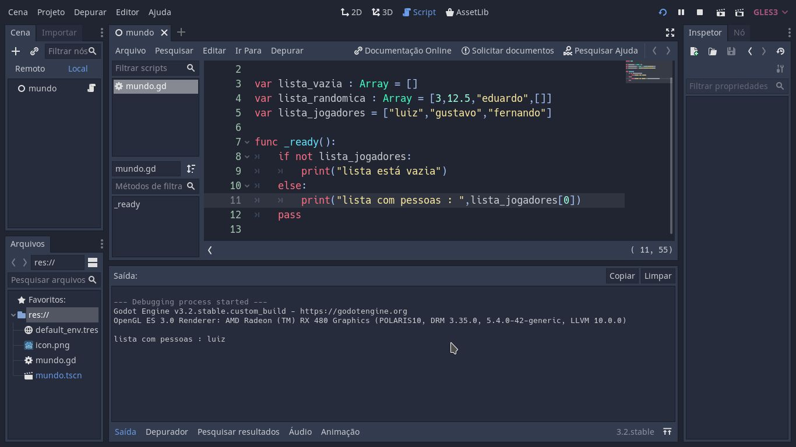

O QUE É ARRAY ?
É uma variável capaz de armazenar vários valores. Podem ser chamadas de vetores ou matrizes
dependendo da necessidade de resposta.
Pra que não haja confusão, é só pensar no seguinte:
Vetor é igual a uma fila de cinema ou igual a uma pilha de pratos. Onde cada pessoa ou cada prato, estará
em sua posição.
Já a matriz, é igual a planilha do excel que a gente usa. Ou então, é como se fosse uma coordenada geográfica.
Onde nós temos latitude e longitude para encontrar uma posição especifica no meio de tantas. Concluímos então que,
matriz possui linha e coluna(latitude e longitude).
Vetor [posição]
Matriz [latitude] [longitude]
No exemplo a seguir, farei apenas teste com vetor , criando uma lista de valores.
DECLARAÇÃO DE VETORES
var lista_vazia : Array = []
var lista_randomica : Array = [3,12.5,"eduardo",[]]
var lista_jogadores = ["luiz","gustavo","fernando"]
EXEMPLO 1
var lista_jogadores = ["luiz","gustavo","fernando"]
func _ready():
if not lista_jogadores:
print("lista está vazia")
else:
print("lista com pessoas : ",lista_jogadores)
pass
Veja o resultado da saída abaixo:

Na saída da informação, ele nos mostra os valores contidos na variável lista_jogadores.
EXEMPLO 2
var lista_jogadores = ["luiz","gustavo","fernando"]
func _ready():
if not lista_jogadores:
print("lista está vazia")
else:
print("lista com pessoas : ",lista_jogadores[0])
pass
Veja o resultado da saída abaixo:

Na saída da informação, ele nos mostra o valor da posição 0 da variável lista_jogadores.